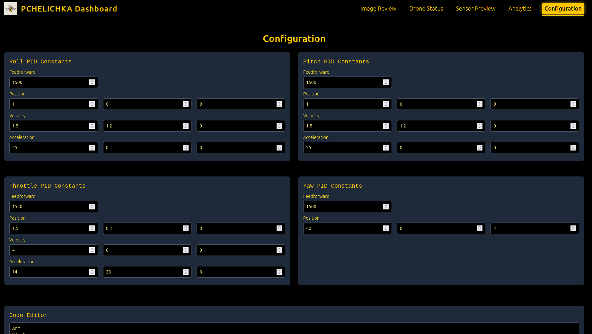
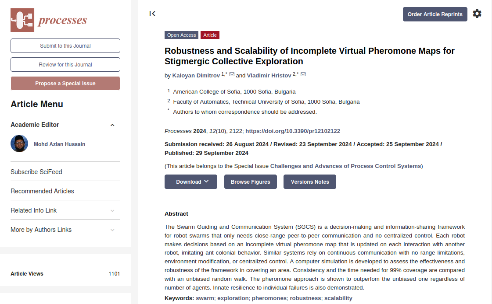
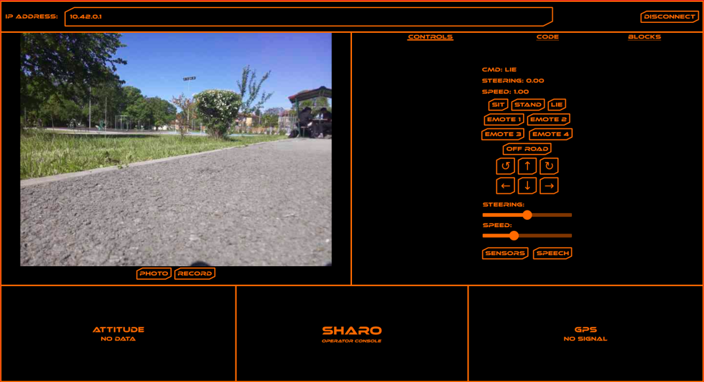
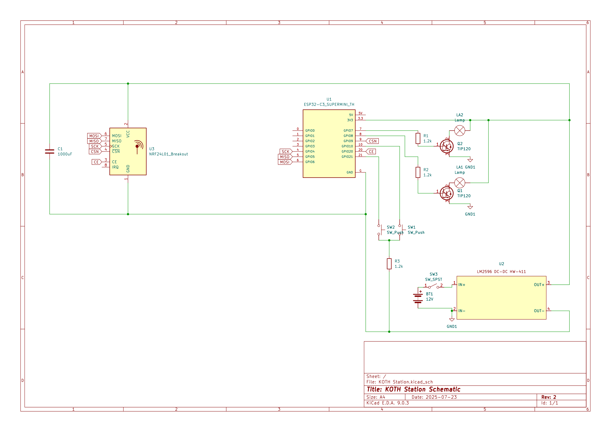
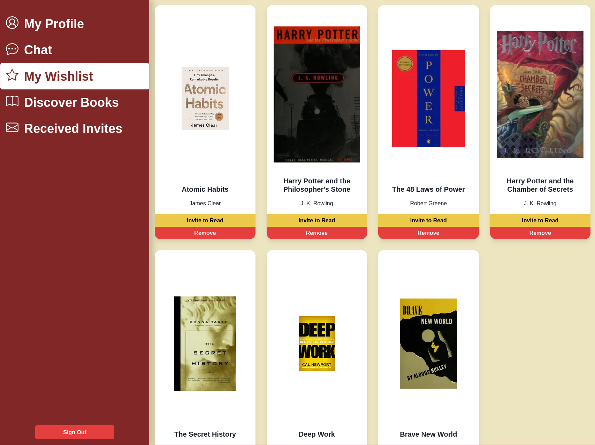
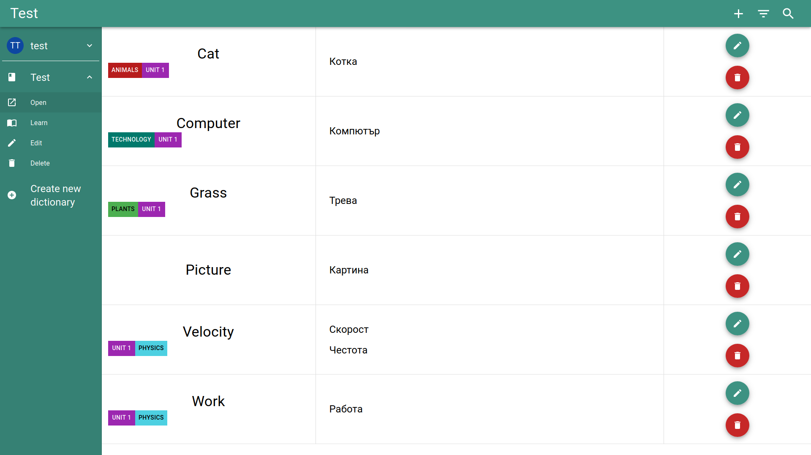

Kaloyan
Dimitrov
Student
Engineer
Makerspace enthusiast
Mechatronics
Embedded programming
Autonomous vehicles
Computer vision
Web development
Biology
About Me

Born in Sofia, Bulgaria
Student at Yale University
Pursuing a B.S. in Electrical Engineering(ABET)
Started competitive programming at age 10 and physics at 13
Discovered my true love(engineering) in high school
Passionate about combining engineering and biology these days
Projects
PCHELICHKA
PCHELICHKA is an autonomous drone-bee, built as a continuation of my research. I came up with an innovative end effector for pollination without damaging the plant, and designed and tuned the control strategy, while my partner provided the hardware. This is an early prototype video:
The drone uses only its camera feed, received over a digital wireless link, and inertial measurement unit for navigation and stabilization. The motors are controlled with a cascading PID controller from position to velocity to acceleration to pitch, roll, and yaw rate commands, which are then sent to the drone through the FPV radio. The drone is entirely autonomous form lift-off to landing.
I also built this dashboard for management of the system. It allows for easy setup of the drone and an interface to the AI I trained. The computer vision model takes images from the camera feed and looks for signs of diseases on the plants to alert the user of threats to yield.
Swarm Guidance and Communication System
My research involved proposing an algorithm for the coordination of robotic swarms with no central control and limited communication range. I further built a simulation environment for its evaluation and compared its effectiveness to other approaches with similar constraints.
 https://www.mdpi.com/2227-9717/12/10/2122FIRST Robotics Competition
I am a co-founder of the only Bulgarian FRC team ACS Phoenix #9089. We have been participating in the competition since the 2023 season, and I captained the team during the 2024 and 2025 seasons.
For the 2025 season, I grew the team to over 30 people with a $10,000 budget, and we secured a playoff spot for the first time. On top of my organizational duties as captain, I took the lead on developing the elevator, arm, and intake mechanisms, as well as programming and autonomous routines.
In 2024, I took over as captain and we became 25/51, compared to 48/49 in 2023. I led our fundraising efforts, nearly tripling the team's budget from the previous year, while also developing the software and the intake mechanism.
Our inaugural season was an emotional rollercoaster, so I was mainly performing hardware troubleshooting and scrapping together last-minute software.
SHARO
SHARO is a robot dog I built again with a partner. I was mainly responsible for the software of the robot, which was built from scratch. I came up with a novel way to define the motion of its limbs with Bézier curves.
I also integrated computer vision models for facial detection and emotion classification, which made it particularly engaging for kids at various events. To fit all the code on a Raspberry Pi 4, I optimized the code with multiprocessing and moved the inverse kinematics calculations to Rust.
This control panel(desktop and mobile app available) is used to preview the camera and sensors while controlling the movement of the robot.
Paintball
I was contacted by a local chain of paintball arenas to create a device for a king-of-the-hill style game. I designed and fabricated a total of 5 "checkpoints".
An esp32 is the "brain" of each checkpoint and controls 2 high-power LEDs through Darilngton transistors. A UPS battery powers the entire system, and the esp32 through a step-down converter. The checkpoints are wirelessly set up before play and measure the duration that each team controls the checkpoint, producing a winner at the end. They are also able to sync with each other through a dedicated NRF24L01+ radio.
Space Challenges
I attended a 5-week-long summer bootcamp where along with a rigorous academic program, consisting of daily lectures and weekly survival quizzes, we were separated into teams with the task of building ground stations to communicate with a real satellite.
I was the team captain and mainly focused on the electroncis and software. Along with control of the station, I also built a satellite tracker with Rust that automatically started the station when a satellite pass is occuring. In the end, we were awarded for best project documentation and I was among the few to successfully graduate the bootcamp.
LocusLibri
LocusLibri is a social media for bookworms. It lets users keep a reading list of books they enjoy and matches users based on their reading preferences.
I made the entire web platform myself, back-end to front-end and marketing materials.
ParoleMemo
ParoleMemo is a digital dictionary-notebook to assisst learners with vocabulary.
I built the app entirely by myself with React, MongoDB, and Golang.
Fortamentum
I was a part of a 3-person team that participated in the NSS Space Settlement Contest. We produced a 50-page proposal for a space station as a future human habitat, complete with engineering design, governance strucutre, and economical analysis. I personally came up and documented the financial services offered, governance hierarchy, power supply, communications, transport ships, port, and storage.